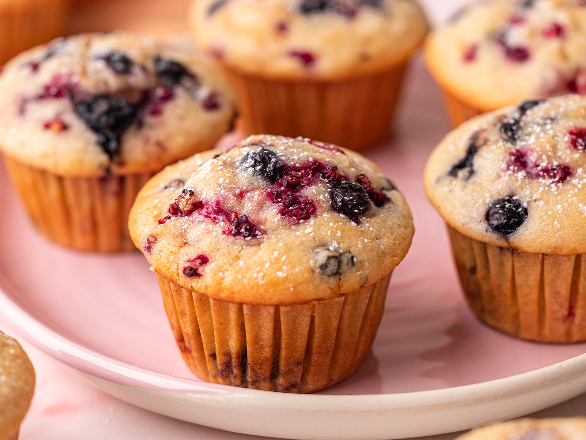

CRANBERRY MUFFINS

Description
These cranberry muffins are moist, fluffy, and packed with tart cranberries. Perfect for breakfast or a snack!
Great for family gatherings, organizations or any other event
Ingredients
- 2 cups all-purpose flour
- 1 cup granulated sugar
- 1 tablespoon baking powder
- 1/2 teaspoon salt
- 1/2 cup unsalted butter, melted
- 1 cup milk
- 2 large eggs
- 1 teaspoon vanilla extract
- 1 1/2 cups fresh or frozen cranberries
Instructions
- Preheat your oven to 375°F (190°C) and line a muffin tin with paper liners.
- In a large bowl, whisk together the flour, sugar, baking powder, and salt.
- In another bowl, combine the melted butter, milk, eggs, and vanilla extract.
- Pour the wet ingredients into the dry ingredients and stir until just combined. Do not overmix.
- Gently fold in the cranberries.
- Divide the batter evenly among the muffin cups, filling each about 2/3 full.
- Bake for 20-25 minutes, or until a toothpick inserted into the center comes out clean.
- Allow the muffins to cool in the tin for 5 minutes before transferring them to a wire rack to cool completely.